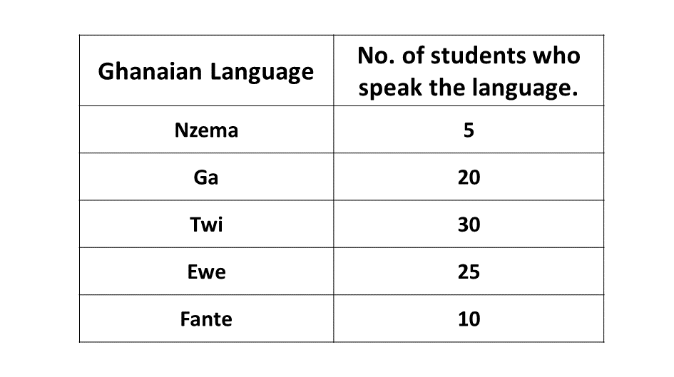

BECE
Year to Practice:
1990
1991
1992
1993
1994
1995
1996
1997
1998
1999
2000
2001
2002A
2002B
2003
2004
2005
2006
2007
2008
2009
2010
2011
2012
2013
2014
2015
2016
2017
2018
2019
2020
2021
2022
2023
2024
PAST QUESTIONS 1996
Time yourself to improve on your speed. You are to use not more than 60 minutes for this section.
Click on the link below when you are ready.
Try the questions first, using not more than 15 minutes for each question, and watch the accompanying videos to see how the questions are solved.
Question 1
-
Kojo is \(n\) years old now.
\((i)\) How old was he 5 years ago?
\((ii)\) How old will he be 10 years from now?
\((iii)\) If his age in 10 years time will be four times his age 5 years ago, how old is he now?
-
Convert 2342five to a base 10 numeral.
-
Given that \(f = \dfrac{vu}{v + u}\), find \(v\) if \(f = 20\) and \(u = 5\)
Question \(1a\)
Kojo's age now \(\Rightarrow n\)
\((i)\) Kojo's age 5 years ago \(\Rightarrow n - 5\)
\((ii)\) Kojo's age 10 years years from now \(\Rightarrow n + 10\)
\((iii)\) \(n + 10 = 4(n - 5)\)
\(\hspace{0.1in} \Rightarrow n + 10 = 4n - 20\)
\(\hspace{0.1in} \Rightarrow 20 + 10 = 4n - n\)
\(\hspace{0.1in} \Rightarrow \hspace{0.1in} 30 = 3n\)
\(\hspace{0.1in} \Rightarrow \dfrac{3n}{3} = \dfrac{30}{3}\)
\(\hspace{0.1in} \Rightarrow n = 10\)
\(\therefore\) Kojo is 10 years old now.
Question \(1b\)
Converting \(2342_{five}\) to base 10:
\(\Rightarrow\) \((2 \times 5^3)\) \(+\) \((3 \times 5^2)\) \(+\) \((4 \times 5^1)\) \(+\) \((2 \times 5^0)\)
\(\Rightarrow\) \((2 \times 125)\) \(+\) \((3 \times 25)\) \(+\) \((4 \times 5)\) \(+\) \((2 \times 1)\)
\(\Rightarrow\) \(250\) \(+\) \(75\) \(+\) \(20\) \(+\) \(2\)
\(\Rightarrow\) \(347\)
\(\therefore\) \(2342_{five}\) is equivalent to \(347_{ten}\)
Solution
\(f = \dfrac{vu}{v + u}\)
Making \(v\) the subject:
\(\Rightarrow\) \(f(v + u) = \dfrac{vu}{v + u} \times (v + u)\)
\(\Rightarrow\) \(f(v + u) = vu\)
\(\Rightarrow\) \(fv + fu = vu\)
\(\Rightarrow\) \(fu = vu - fv\)
\(\Rightarrow\) \(fu = v(u - f)\)
\(\Rightarrow\) \(\dfrac{fu}{u - f} = \dfrac{v(u - f)}{u - f}\)
\(\Rightarrow\) \(v = \dfrac{fu}{u - f}\)
If \(f = 20\) and \(u = 5\)
\(\Rightarrow\) \(v = \dfrac{20(5)}{5 - 20}\)
\(\Rightarrow\) \(v = \dfrac{100}{-15}\)
\(\Rightarrow\) \(v = \dfrac{20 \times 5}{-3 \times 5}\)
\(\Rightarrow\) \(v = -\dfrac{20}{3}\)
\(\Rightarrow\) \(v = -6\frac{2}{3}\)
\(\therefore\) \(\underline{v \ is \ -6\frac{2}{3}}\)
Question 2
-
A man deposited ₵350,000.00 in his account at the bank. A simple interest of 4% per annum was paid on his deposit. Calculate the total amount at the end of the end of 4 years.
-
The cost of sending a telegram is ₵500.00 for the first 12 words and ₵25.00 for every extra word. Find the cost of sending a telegram containing 20 words.
Solution
Principal, \(P =\) ₵350,000.00
Rate, \(R=\) 4\(\%\)
Time, \(T=\) 4 years
Simple Interest, \(I = \dfrac{P \times R \times T}{100}\)
\(\Rightarrow I = \dfrac{₵350,000 \times 4 \times 4}{100}\)
\(\Rightarrow I = ₵3500 \times 16\)
\(\Rightarrow I = ₵56,000\)
\(\therefore\) the interest earned was ₵56,000.00 at the end of the 4 years
Total amount after 4 years:
\(\Rightarrow\) Principal \(+\) Interest
\(\Rightarrow ₵350,000.00 + ₵56,000\)
\(\Rightarrow ₵406,000.00\)
\(\therefore\) the total amount at the end of the 4 years was ₵406,000.00.
Solution
Number of words \(=\) 20
Cost of first 12 words \(=\) ₵500.00
Remaining number of words:
\(\Rightarrow 20 - 12\)
\(\Rightarrow 8\) words.
Cost of remaining number of words:
\(\Rightarrow 8 \times ₵25\)
\(\Rightarrow ₵200.00\)
Total cost:
\(\Rightarrow\) Cost of first 12 words \(+\) Cost of remaining 8 words
\(\Rightarrow ₵500.00 + ₵200.00\)
\(\Rightarrow ₵700.00\)
\(\therefore\) the total cost of the 20 words is ₵700.00
Question 3
The table below show the distribution of pupils in a JSS form 1 who speak some of the Ghanaian Languages.
-
Draw a pie chart for the distribution.
-
What is the modal Ghanaian Language?
-
If a pupil is selected at random from the form, what is the probability that he speaks Ga?
Solution
Question 4
Using a ruler and a pair of compasses only,
-
Construct triangle \(ABC\), in which \(AB = 6\) cm, \(AC = 10\) cm and \(BC = 8\) cm. Measure \(\angle ABC\).
-
Construct the perpendicular bisectors (mediators) of \(AB\) and \(BC\). Let the bisector meet at \(O\).
-
Construct a circle with center \(O\) and radius \(OA\). Measure the radius of the circle.
Solution
Question 5
-
Using a scale of 2 cm to 2 units on both axes, draw two perpendicular axis \(Ox\) and \(Oy\) on a graph sheet.
-
On this graph sheet, mark the \(x-\)axis from \(-10\) to \(10\) and the \(y-\)axis from \(-12\) to \(12\).
-
Plot on the same graph sheet, the points \(A(2, 1)\), \(B(3, 4)\), \(A(4, 2)\). Join the points to form a triangle \(ABC\).
-
Draw the enlargement \(A_1B_1C_1\) of triangle \(ABC\) under a scale factor of 2 from the origin \((0, 0)\) such that \(A \rightarrow A_1\), \(B \rightarrow B_1\) and \(C \rightarrow C_1\). Indicate the coordinates of triangle \(A_1B_1C_1\). Show all the lines of transformation.
-
Using the \(x-\)axis as the mirror line, draw the image \(A_2B_2C_2\) of triangle \(ABC\) where \(A \rightarrow A_2\), \(B \rightarrow B_2\) and \(C \rightarrow C_2\). Indicate the coordinates of triangle \(A_2B_2C_2\).
Solution
To advertise on our website kindly call on 0208711375 or 0249969740.